OMARCHY · MPV · YT-DLP · MIT
OmaRaptor Player
IN REVIEWYouTube video player for Omarchy and Linux
A free, open-source, super-light player for almost any video link. Copy a link, press Super+Alt+Y, and it plays in a pinned 16:9 window. No login, no browser, and a HUD inspired by the F-22 Raptor.
omarchy plugin add https://github.com/KarPage/omaraptor-player --enableSizes measured 2026-10-30 from a depth-1 clone of github.com/KarPage/omaraptor-player.
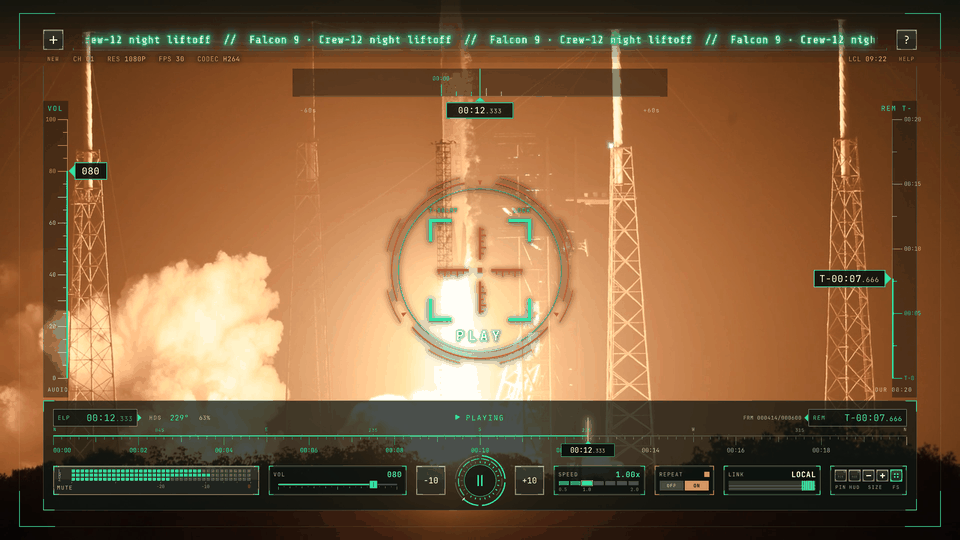
01 FEATURES
Copy a link, press Super+Alt+Y. The first player opens centred, more players park in the free corners.
A bare player with a slim bar, or the full cockpit. MASTER ARM switches between them.
Seek tape, time, volume, speed, repeat, link status and a real audio signal meter.
Heading tape, VOL and REM tapes, a top time box and a scope that locks on when you pause.
Timers turn amber, then red, and a NEXT card shows what plays next.
No login and no browser. mpv and yt-dlp underneath, so it starts fast and stays light.
02 GALLERY

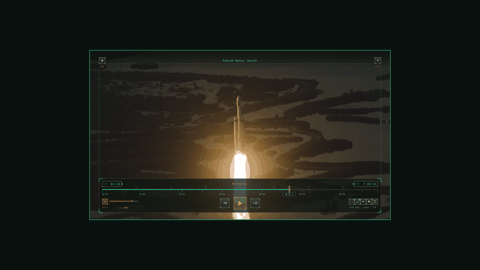

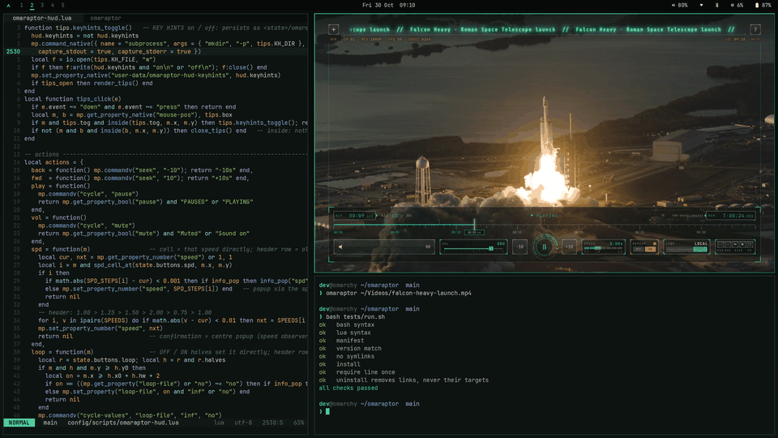

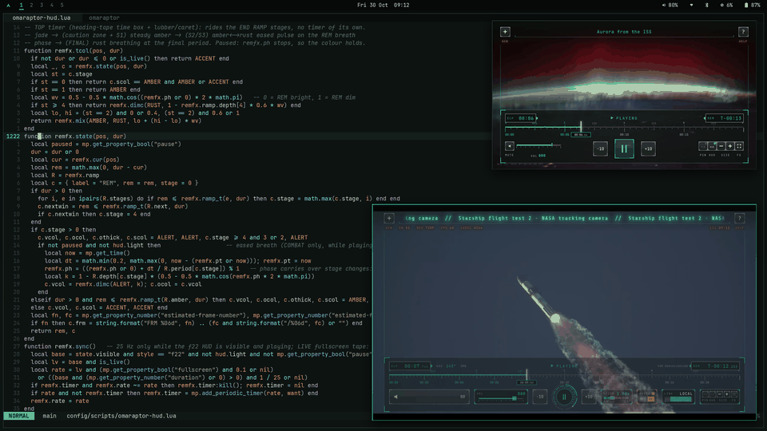

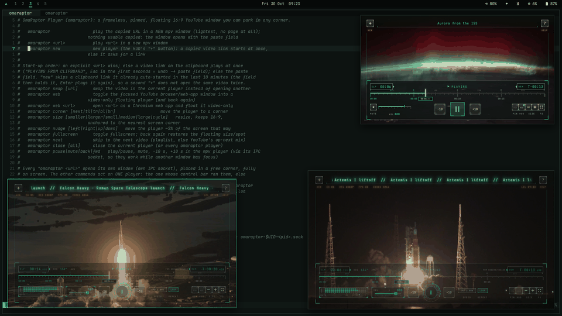

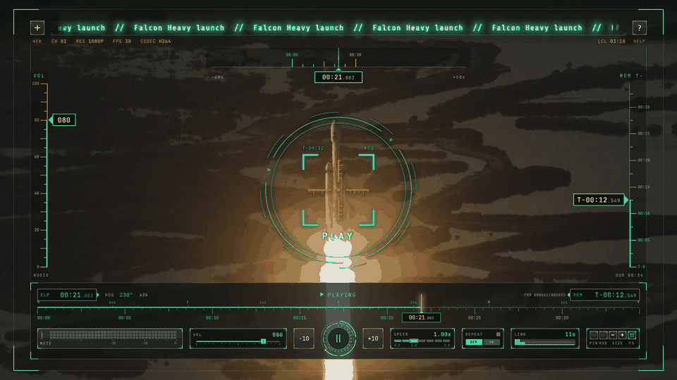

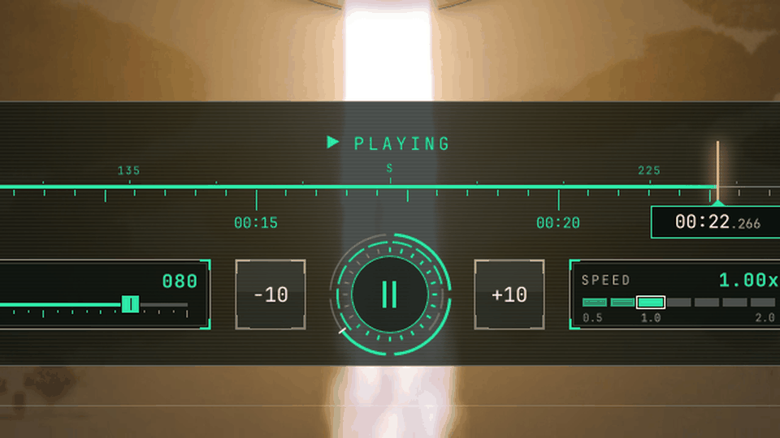

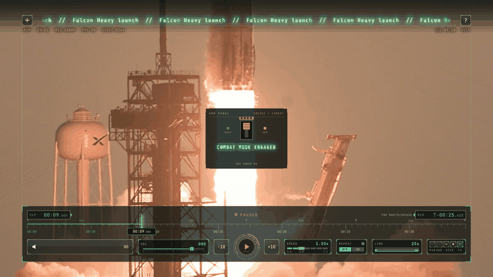

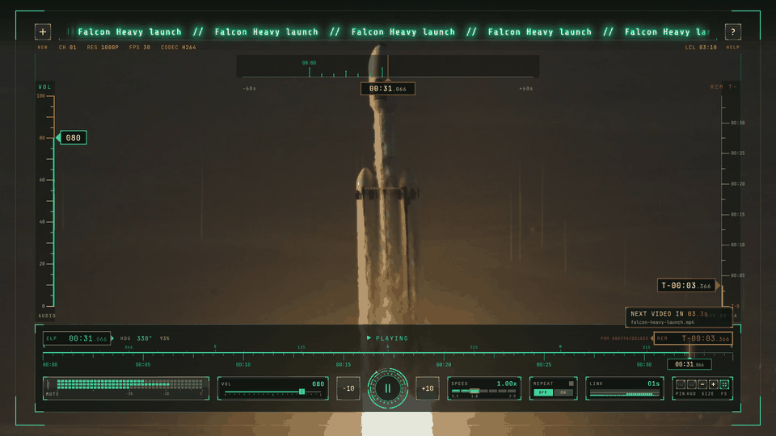

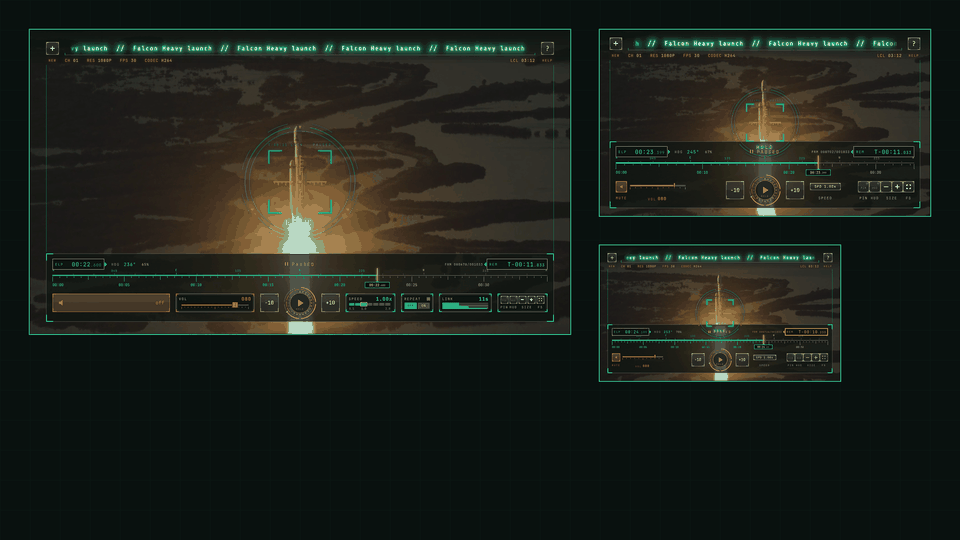

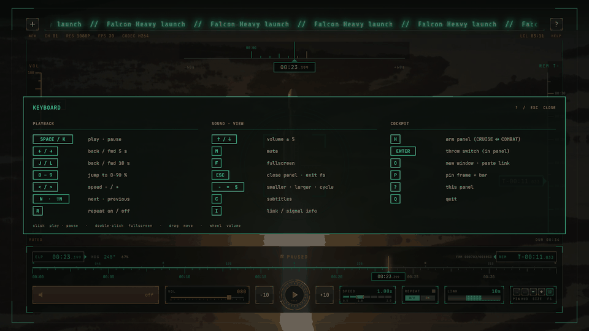
03 SUPPORTED SITES
- YOUTUBE
- X
- TWITCH
- TIKTOK
- DAILYMOTION
- STREAMABLE
- DIRECT FILES
- HLS
- LIVE STREAMS
Vimeo and Reddit don't work, because they need a login.
04 INSTALL
omarchy plugin add https://github.com/KarPage/omaraptor-player --enablegit clone https://github.com/KarPage/omaraptor-player && cd omaraptor-player && ./install.shNeeds mpv, yt-dlp, socat, jq and wl-clipboard. The installer asks before it adds one line to your Hyprland config. ./uninstall.sh removes it all.
05 CREDITS · NOTES
Footage: SpaceX (CC0) via NASA; NASA, NASA/Cory S Huston, NASA SVS / Marit Jentoft-Nilsen (public domain/CC0).
Music: "Cyber March" by iamoneabe (CC0).
Unofficial fan project. Not affiliated with or endorsed by the U.S. Air Force, Lockheed Martin, SpaceX or NASA.